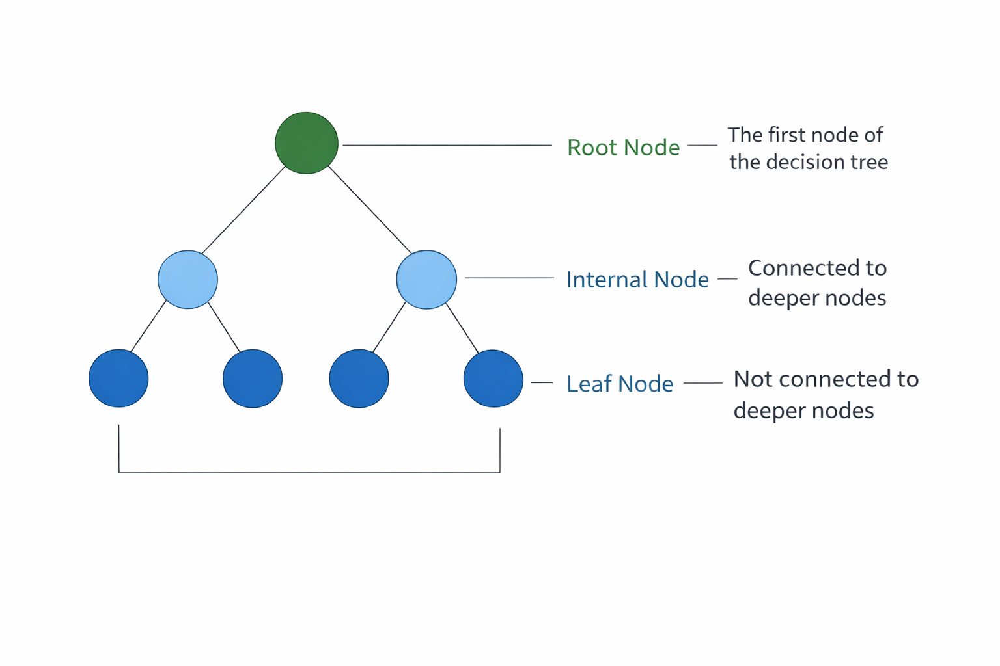

Decision Trees
1. Introduction to Decision Tree
A Decision Tree is one of the most popular supervised machine learning algorithms used for both classification and regression problems. It is called a decision tree because its structure resembles a tree where decisions are made step by step.
In a decision tree, the dataset is divided into smaller groups based on conditions on the features. These conditions are arranged in a tree-like structure where each path from the root node to a leaf node represents a sequence of decisions that leads to a final prediction.
Because of its simple structure and easy interpretation, the decision tree algorithm is widely used in applications such as medical diagnosis, customer purchase prediction, loan approval systems, and fraud detection.
2. Structure of a Decision Tree
A decision tree consists of several components that together form the structure of the model, as shown in Figure 1.
2.1 Root Node
The root node is the topmost node of the decision tree. It represents the entire dataset and is the starting point of the decision-making process. The algorithm selects the most informative feature at this node to split the dataset.
2.2 Internal Nodes
Internal nodes are also called decision nodes. These nodes represent conditions or tests applied to the dataset. Based on the result of the test, the data moves to the next branch.
2.3 Branches
Branches represent the possible outcomes of a test performed at a node. Each branch connects one node to another and shows the direction that the data follows depending on the attribute value.
2.4 Leaf Nodes
Leaf nodes are also called terminal nodes. These nodes represent the final decision or prediction made by the model. In classification problems, they represent class labels, while in regression problems they represent numerical values.

Figure 1: Basic structure of a Decision Tree (Root Node, Internal Nodes, and Leaf Nodes).
3. Decision Tree Learning Concept
The learning process of a decision tree revolves around one central principle: recursively partitioning the training data into progressively purer subsets with respect to the target variable. The goal is to create regions in feature space where most or all samples belong to the same class (for classification) or have similar output values (for regression).
At the start of training, the entire dataset is placed at the root node. The algorithm then searches all available features and possible split points for each feature to find the split that best separates the data. Once a split is chosen, the data is divided into subsets, and the same process is applied recursively to each subset. This continues until a stopping condition is met.
The concept of homogeneity is central to this process. A node is considered pure if all the samples it contains belong to the same class. As the tree grows deeper, each node should ideally contain a more homogeneous set of samples than its parent.
This recursive partitioning allows decision trees to model complex, non-linear relationships between features and the target variable without requiring explicit feature engineering. At each level, the algorithm makes a locally optimal split (a greedy choice), which is computationally efficient but does not always guarantee a globally optimal tree.
4. Splitting Criteria
To decide which feature should be used to split the dataset at each node, the decision tree algorithm uses mathematical measures called splitting criteria. Two common criteria are Entropy (Information Gain) and Gini Index.
4.1 Entropy
Entropy measures uncertainty or impurity in a dataset. If all samples belong to one class, entropy is zero (perfect purity). If the dataset contains a mixture of classes, entropy is higher.
where pi is the probability of class i.
Using entropy, the algorithm computes Information Gain, which measures how much uncertainty is reduced after splitting the data using a feature. The feature with the highest information gain is selected.
4.2 Gini Index
The Gini Index is another impurity measure. It represents the probability of incorrectly classifying a randomly chosen sample if it were labeled according to the class distribution in the node.
A lower Gini value indicates a purer node.
5. Tree Construction Process
The construction of a decision tree follows a top-down recursive process:
- Place the full training dataset at the root node.
- Evaluate every feature and possible split threshold.
- Compute split quality using Entropy or Gini.
- Select the best feature and split point.
- Divide data into child subsets.
- Recursively repeat for each child node.
- Stop when stopping conditions are met and assign leaf labels.
Common stopping conditions include:
- All samples at a node belong to one class.
- Node sample count becomes too small.
- Maximum depth is reached.
- Further splits do not improve impurity significantly.
Because tree growth is greedy and local, pruning and ensemble methods are often used to improve performance.
6. Pruning Techniques
One major challenge with decision trees is overfitting. If the tree grows without restrictions, it may memorize noise and outliers, reducing performance on unseen data.
6.1 Pre-Pruning (Early Stopping)
Pre-pruning stops growth during tree construction itself. Common strategies include:
- Limiting maximum depth.
- Requiring minimum samples to split a node.
- Requiring minimum impurity reduction for a split.
It is computationally efficient but may stop too early, causing underfitting.
6.2 Post-Pruning
Post-pruning first grows a full tree, then removes weak branches using validation performance. A widely used method is Cost-Complexity Pruning with parameter α, which balances accuracy and model complexity.
Larger α values produce smaller trees; smaller α values allow larger trees. Cross-validation is commonly used to choose the best α.
7. Decision Tree Algorithm
Step 1: Start with the full dataset at the root node.
Step 2: If all samples belong to one class, create a leaf node and stop.
Step 3: If no features remain, create a leaf with majority class and stop.
Step 4: Select the best split.
For Gini impurity:
Choose the split with minimum Gini.
For information gain (entropy):
Choose the split with maximum information gain.
Step 5: Create child nodes.
Step 6: Recursively repeat Steps 2-5.
Step 7 (Prediction): Traverse from root to leaf based on feature tests and return the leaf class.
8. Merits of Decision Trees
- Interpretability and transparency: Easy to understand and explain.
- Minimal preprocessing: No need for normalization or standardization.
- Mixed data support: Handles both numerical and categorical features.
- Automatic feature selection: Uses the most informative features during splitting.
- Non-linear modeling: Captures non-linear relationships naturally.
- Fast inference: Prediction is efficient after training.
9. Demerits of Decision Trees
- Prone to overfitting: Deep trees can memorize noise.
- High variance / instability: Small data changes may produce different trees.
- Greedy local decisions: May miss globally optimal structure.
- Complex-pattern limitation: Very deep trees may be needed for some patterns.
- Feature-level bias: Can prefer high-cardinality features.
- Lower standalone accuracy: Usually less accurate than ensembles like Random Forest or Gradient Boosting.